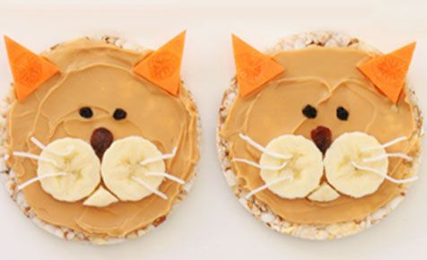

Kitty Cat Rice Cakes

Meow-king Memories with the Whole Family
This fun dessert is a healthy and nutritious snack that the whole family will be pawing for! Each recipe will create two kitty cat rice cake snacks :)
Ingredients
- 2 Rice Cake Crisps
- 1 Tbsp of Peanut Butter (substitutes: jam, other nut butters, chocolate spread)
- 1/4 Carrot cut into 4 triangles -> Ears
- 1/2 Banana -> Cheeks
- Coconut Thread -> Whiskers
- 4 Currants -> Eyes
- 2 Raisins -> Nose
Recipe Steps
- Spread the peanut butter (or a substitute) over the two rice cake crisps.
- Arrange the rest of the ingredients whichever way you would like or follow the rest of the steps!
- Place 2 carrots near the top of each crisp to create the cat ears.
- Place 2 banana slices near the center of each crisp and a traingular piece below and between the two banana slices to create the cheeks of the cat.
- Place as many coconut threads as you'd like above the bananas to create the whiskers.
- Place 2 currants above the cheeks of each crisp to create the eyes.
- Finally, place the raisin above and between the two banana slice cheeks to create the nose.
Voila! You have succesfully created your purr-fect delicious kitty cat snacks!